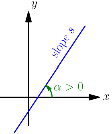
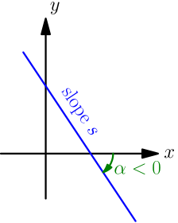
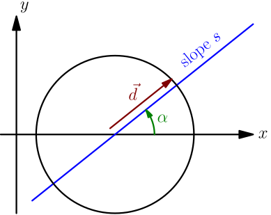
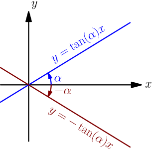
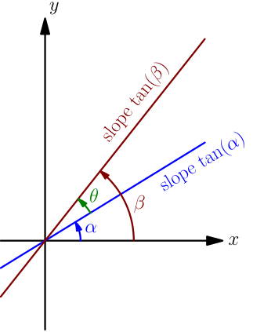

Slope and Tan¶
In the previous derivation, we saw that if $\alpha$ is the angle from a line with slope $s_1$ to a line with slope $s_2$, then we have $$ \tan(\alpha) = \frac{s_2 - s_1}{1 + s_1s_2}. $$ Let's consider a special case: the angle from $x$ axis to a line with slope $s$.


The equation of the $x$ axis is just $y=0$, which can be rewritten as $y=0x+0$, so the slope of $x$ axis is $0$. We want the angle from $x$ axis to the line with slope $s$, so we plug in $s_1 = 0$ and $s_2 = s$, and we get $$ \tan(\alpha) = \frac{s - 0}{1 + 0s} = s. $$
Let $\alpha$ be the angle from $x$ axis to a line with slope $s$. Then $s = \tan(\alpha)$.
There's a different, possibly more enlightening way to arrive at this result. Let's draw a non-vertical line with slope $s$ and angle $\alpha$. Let's also draw a unit circle around a point on the line. Let $\vec d$ be the vector from the center of the unit circle to where the unit circle intersects the line.

From trig (TODO), we know that $$ \vec d = \cos(\alpha)\I + \sin(\alpha)\J. $$ On the other hand, $\vec d$ is a vector in the direction of the line, so from this derivation we get $$ s = \frac{d_y}{d_x} = \frac{\sin(\alpha)}{\cos(\alpha)} = \tan(\alpha). $$
Using Slope for Trig¶
This is not only a way to think about slope, but also a way to think about tan: $\tan(\alpha)$ is the slope of a line with angle $\alpha$.
For example, consider a line with slope $\tan(\alpha)$, going through $(0,0)$ for simplicity. Its equation is $y = \tan(\alpha)x + h$, where plugging in $x=y=0$ reveals that $h=0$. Reflecting the line to the other side of the $x$ axis gives a line whose equation is $-y=\tan(\alpha)x$; that is, $y = -\tan(\alpha)x$.

Mirroring the line flips the sign of the angle, so the slope of the mirrored line is $\tan(-\alpha)$. On the other hand, we can see from the equation of the line that its slope is $-\tan(\alpha)$, so we get $$ \tan(-\alpha) = -\tan(\alpha). $$
For a more complex example, consider two lines with angles $\alpha$ and $\beta$. By the above result, their slopes are $\tan(\alpha)$ and $\tan(\beta)$.

Let $\theta$ denote the angle from the $\alpha$ line to the $\beta$ line. Then we have $$ \alpha + \theta = \beta, $$ which gives $\theta=\beta-\alpha$. On the other hand, we can use the formula for angle between lines to get $$ \tan(\theta) = \frac{s_2-s_1}{1 + s_1s_2}, $$ where $s_1=\tan(\alpha)$ and $s_2=\tan(\beta)$ are slopes. Plugging everything in gives $$ \tan(\beta-\alpha) = \frac{\tan(\beta)-\tan(\alpha)}{1 + \tan(\alpha)\tan(\beta)}, $$ which is a well-known trig formula.
In fact, the usual way to derive the formula for angle between lines is to start with the connection between slope and tan (deriving it differently, of course), and then use the above trig formula to find $\tan(\theta)$.
We can get other well-known trig formulas as special cases of this one (this kind of thing happens a lot in trig). For example, by choosing $\alpha = -\beta$, we get $$ \tan(\beta-(-\beta)) = \frac{\tan(\beta) - \tan(-\beta)}{1 + \tan(-\beta)\tan(\beta)}. $$ By applying $\tan(-\beta)=-\tan(\beta)$, which we derived above, this simplifies to $$ \tan(2\beta) = \frac{2\tan(\beta)}{1 - \tan^2(\beta)}, $$ which is also a well-known trig formula.